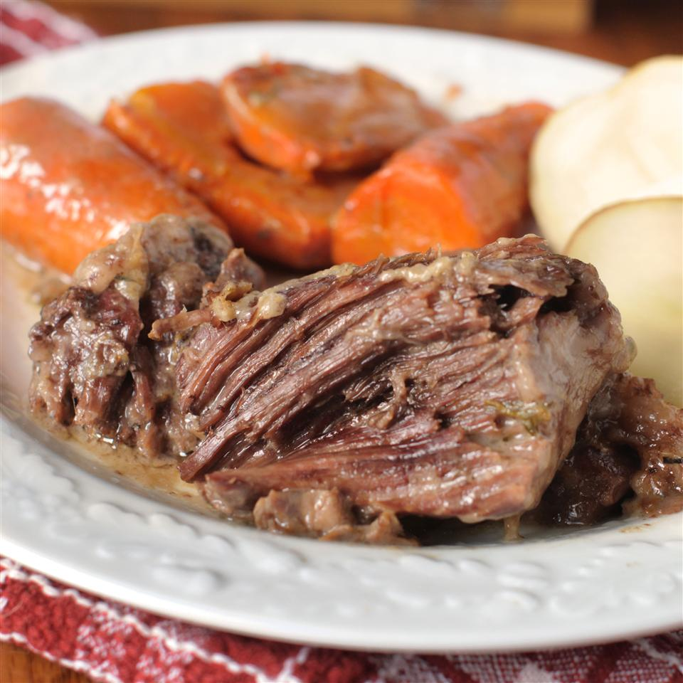

Easy Pot Roast

Description:
This is an easy oven-baked pot roast with vegetables. The aroma will make you hungry while this delicious roast bakes.
Ingredients:
- 2 pounds beef pot roast, fat trimmed and discarded
- 3 potatoes, peeled and cut into 6 pieces
- 1 large onion, cut into 8 pieces
- 2 carrots, cut into 1-inch pieces
- 2 stalks celery, cut into 1-inch pieces
- 3½ cups water
- salt and ground black pepper to taste
- 1 pinch garlic salt, or to taste
- 3 tablespoons cornstarch
- ½ teaspoon browning sauce (such as Gravy Master®) (Optional)s
Steps:
- Preheat the oven to 350 degrees F (175 degrees C).
- Place roast in a large baking pan; arrange potatoes, onion, carrots, and celery around roast. Pour 3 cups water into baking pan. Season roast with salt, pepper, and garlic salt. Cover pan with aluminum foil.
- Bake in the preheated oven until roast is browned and cooked through, about 3 hours. An instant-read thermometer inserted in the thickest part of the roast should read 145 degrees F (65 degrees C). Transfer roast to an oven-safe platter. Remove vegetables using a slotted spoon and arrange around roast.
- educe oven temperature to 200 degrees F (95 degrees C). Place platter with roast and vegetables in the oven to keep warm.
- Pour the remaining juices from the baking pan into a saucepan; bring to a boil. Stir 1/2 cup water and cornstarch together in a bowl until smooth; pour into boiling pan juices. Reduce heat to medium; cook, stirring constantly, until gravy is thick, about 5 minutes; season with salt and pepper. Stir in browning sauce.